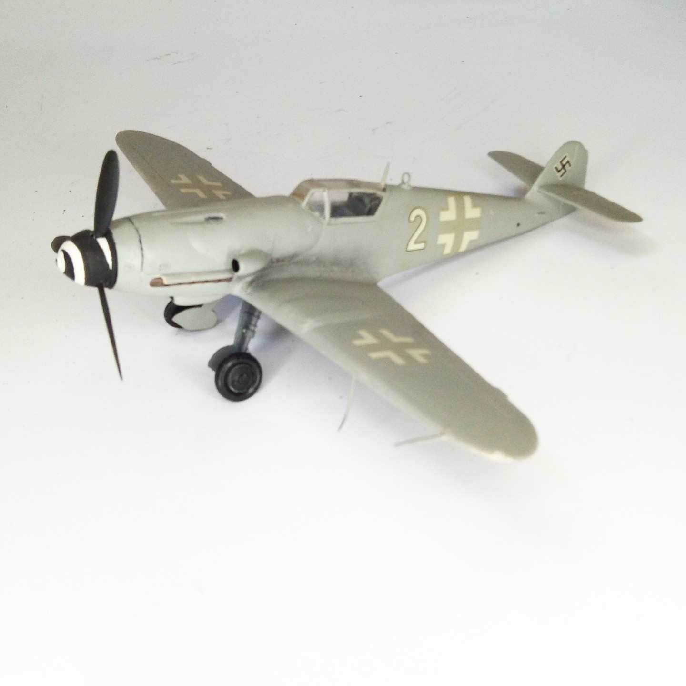

Aerei · scale model archive
Messerschmitt Me109 K
Messerschmitt Me109 K — Kit: Fujimi, Scale: 1/48. Livery for high altitude 'top cover' escort fighters #1/48 #Fujimi

Photo gallery
English description
Livery for high altitude 'top cover' escort fighters
#1/48 #Fujimi
Descrizione italiana
Livrea per high altitude 'top cover' escort figthers.